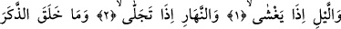
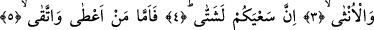
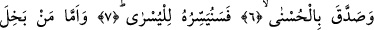
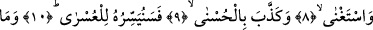
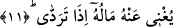

DOĞRU YOLU GÖSTERMEK
BİZE AİTTİR
Bismillâhirrahmânirrahîm
1. (Karanlığı ile etrafı) bürüyüp örttüğü zaman geceye,
2. Açılıp ağardığı vakit gündüze,
3. Erkeği ve dişiyi yaratana yemin ederim ki
4. İşleriniz başka başkadır.
5. Artık kim verir ve sakınırsa,
6. En güzeli de tasdik ederse,
7. Biz de onu en kolaya hazırlarız (onda başarılı kılarız).
8. Kim cimrilik eder, kendini müstağni sayar,
9. En güzeli de yalanlarsa,
10. Biz de onu en zora hazırlarız.
11. Düştüğü zaman da malı kendisine hiç fayda vermez.
Önceki sûrede de geçtiği üzere “izâ” kasemden sonra geldiği için hal bildirmektedir.
Yâni güneşi bürüyüp kapattığı ve örttüğü zaman geceye yemin ederim, demektir. Önceki
sûredeki “Onu örttüğü zaman geceye.” (eş-Şems, 91/4) kavli de bunun gibidir. Burada
mef’ûl zâten bilindiği için zikredilmemiştir. Ya da mef‘ûl aslında gündüzü veya gecenin
karanlığı ile örttüğü her şeydir. Mef’ûlün zikredilmemiş olması genellemek içindir.
Ehl-i nücûma göre gece, güneşin batması ile doğması arasındaki zamandır. Şeriat
âlimlerine göre ise gece, güneşin batmasıyla fecr-i sâdıkın/tan yerinin ağarması
arasında olan süredir. Herhalde burada kasdedilen gündüz ve gecenin mukabili olan
şeydir.
Keşfü’l-esrâr’da der ki: Allah Teâlâ geceye bir mertebe ve şeref vermiş, Kur’ân-ı